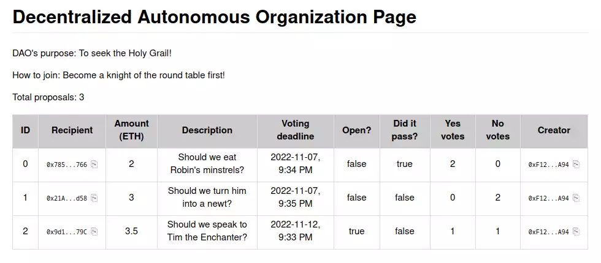

Go up to the CCC HW page (md) | view tabbed version
In this assignment you are going to create a Decentralized Autonomous Organization (DAO). The DAO will issue NFT tokens (that you created in the Ethereum Tokens (md) assignment) to keep track of who are members, allow members to submit proposals, and allow voting on those proposals. For the purposes of this assignment, a proposal consists of a reason (which can be any string), an amount to pay, and an account address to pay it to. You will then make a Web3 interface for this DAO that will allow anybody with a standard web browser to see the status of the DAO and the proposals.
Beyond general experience with programming Solidity (which you have at this point it the course), this assignment requires:
Any changes to this page will be put here for easy reference. Typo fixes and minor clarifications are not listed here. So far there aren’t any significant changes to report.
A Decentralized Autonomous Organization (DAO) allows members to submit and vote on proposals. For the purposes of this assignment, these proposals always have some amount of ether associated with them. A proposal is whether to pay the amount of ether to that particular account address. One example of what to use a DAO for is a charity organization that focuses on one particular type of area (education, environment, etc.): members vote on what to donate money to (and how much to donate), and a successful proposal means that organization receives some amount of ether.
As far as this assignment is concerned, we are not concerned as to what your DAO is for, only that it works.
Your contract must implement the provided DAO interface below. Your contract opening line must be: contract DAO is IDAO, IERC165 {. This interface was adapted from the open-source code for The ÐAO, but was heavily modified to both work with current versions of Solidity and to fit better with this assignment. In particular, we removed a number of features, since this assignment is really about Web3: splitting off a sub-DAO, including transaction data in the proposal, anything relating to quorum or quorum modifications, blocking members, vote freezes, etc. In a real DAO, these would need to be implemented as well.
The file is IDAO.sol (src). That file has many comments to explain how it works; those comments are not shown below. While there is a lot listed in the interface, there are really only five or so functions that you have to implement; the rest are just public variables.
// SPDX-License-Identifier: GPL
pragma solidity ^0.8.16;
interface IDAO {
// Public variables
function minProposalDebatePeriod() external returns (uint);
function tokens() external returns (address);
function purpose() external returns (string memory);
function votedYes(address a, uint pid) external returns (bool);
function votedNo(address a, uint pid) external returns (bool);
function numberOfProposals() external returns (uint);
function reservedEther() external returns (uint);
// Proposal struct
struct Proposal {
address recipient;
uint amount;
string description;
uint votingDeadline;
bool open;
bool proposalPassed;
uint yea;
uint nay;
address creator;
}
// Functions to implement
function proposals(uint i) external returns (Proposal memory);
receive() external payable;
function newProposal(address _recipient, uint _amount, string memory _description,
uint _debatingPeriod) external payable returns (uint);
function vote(uint _proposalID, bool _supportsProposal) external;
function executeProposal(uint _proposalID) external returns (bool);
function addMember(address _who) external;
// Events
event ProposalAdded(uint indexed proposalID, address recipient, uint amount, string description);
event Voted(uint indexed proposalID, bool position, address indexed voter);
event ProposalTallied(uint indexed proposalID, bool result);
}The files you will need are:
You will also need your NFTmanager.sol file from the Ethereum Tokens (md) assignment, and any other .sol files that are needed to allow that to compile (such as ERC721.sol, Strings.sol. Address.sol, etc.).
The requirements on this section are intentionally vague – the intent is to let you program your DAO any way you want. The only requirement is that your DAO must fulfill the spirit of the IDAO.sol (src) interface. As far as we are concerned, a proposal description primarily consists of a single string – perhaps it’s a URL, perhaps a statement, etc.
Don’t overthink this! The intent is just for you to get a working DAO. It doesn’t have to be perfect. In fact, this is the easier part of this homework, since we’ve all written a bunch of Solidity programs by now. The longest methods here are 8 lines.
NFTmanager contract has mintWithURI() that takes in a URL. But we don’t need the URLs for this – just having the NFT is sufficient to indicate membership; the contract can check that the calling address has the NFT via a call to the balanceOf() function. So what to do with your token URI field? You can remove it from the contract, if you’d like. Or you can put in any value that you’d like; I put in curator and member to indicate when they were given an NFT (in the constructor or addMember(), respectively). I also returned the empty string in the _baseURI() function.
tokens field is just an address of your NFTmanager, and you will have to cast it to call a function: NFTmanager(tokens).mintWithURL(...);, for example.address(this).balance (we have a work-around; see Piazza post 356). If you get an “invalid opcode” error, that’s what the issue is.payable function, enter the amount in the “Value” box of the deployment pane, choose the right denomination, and click the “Transact” button in the “Low level interactions” box at the bottom of the deployed contract info. This works in any of the deployment environments. Note that this will call your receive() function (which doesn’t have to do anything for this assignment, but it must be there).personal.newAccount() in geth) to use as recipients. Or send it to a classmate’s account. Or send it to the faucet account. Any of those is fine.A few new Solidity concepts to introduce:
constant variable if the value is not going to change. This is done via uint constant public override minProposalDebatePeriod = 600;. This saves gas versus not having it be a constant.address public override tokens variable in your DAO contract. In your constructor, you can use tokens = address(new NFTmanager()). This will deploy a second contract, which is an NFTmanager. Note that the first contract (the DAO) is the deployer/owner of the NFTmanager, so this may affect how you use it. You can then get the address of that deployed NFTmanager via a call to the tokens() getter function. In Remix, you can access the NFTmanager directly by (1) deploying your DAO, (2) compiling the NFTmanager contract, and then (3) putting that obtained address from tokens() getter function in the “At Address” field of the deployment pane of Remix.You are going to write a web interface that shows the status of your DAO and the proposals therein. This web page will only read from the blockchain.
There are a few strict requirements for this section: all of your code – both HTML and Javascript – must be in a single file called dao.html. That file must be in your ~/public_html/ directory on your CS server account. This means that the URL for your page will be https://www.cs.virginia.edu/~mst3k/dao.html, where mst3k is your userid.
This is not a class on user interfaces, so we are not expecting an amazing looking website – we are going to grade it on the functionality, not the appearance. That being said, it needs to be readable and navigatable.
ssh mst3k@portal.cs.virginia.edu (works in Linux, Mac OS X, and Windows Subsystem for Linux). You can also download SecureCRT, which is a GUI ssh client.
dao.html that just has hello world as the contents (we don’t need HTML tags for now)scp on the command line: scp dao.html mst3k@portal.cs.virginia.edu:~/public_html/ (works for Linux, Mac OS X, and WSL)https://www.cs.virginia.edu/~mst3k/dao.html, changing mst3k for your useridweb3.js library. To put that into the correct place on portal, execute two commands, both from your ~/public_html/ directory:
wget https://github.com/ChainSafe/web3.js/raw/1.x/dist/web3.min.jswget https://github.com/ChainSafe/web3.js/raw/1.x/dist/web3.min.js.mapYou are encouraged to look at the examples of web3 usage provided so far in class, and to copy/adapt the code therein. The ones we have seen are:
The links to all of these are on the Collab landing page.
You are welcome to look at the blockchain explorer code as well, but that won’t be as useful for this assignment. When you go to each of the pages listed above (and, if necessary, enter a valid smart contract address), you can view the page source to see what is going on. Loading up the developer console make make it easier to view the code, and – later on – see any Javascript errors. Note that while these example URLs have an extension of .php, what you are viewing is still HTML and Javascript.
Most function calls execute quickly. But some, such as those querying a blockchain, can take some time to return a value. In Javascript, these are called async functions. While async functions might execute quickly, Javascript assumes they will take some time. You have two options here – you can either tell Javascript to wait for the call to return, or give it a code block to execute whenever it does return. If you choose the first option, it will hang until that async call completes. If you choose the second option, it will move on, and later (in another thread) execute that code block when the async call does finally complete.
Consider the following Javascript code; this is from choices.php, which was used to display the Choices of your smart contract from the dApp Introduction (md) assignment.
var contractAddress = '0x01234567890abcdef01234567890abcdef012345';
let web3 = new Web3('URL');
abi = [...]; // the source has the full ABI, which is removed here for clarity
contract = new web3.eth.Contract(abi,contractAddress);
const getNumChoices = async() => {
return await contract.methods.num_choices().call();
}
const getChoiceInfo = async(i) => {
let x = await contract.methods.choices(i).call();
return [x.name,x.votes];
}
const setChoiceInfo = async(i) => {
getChoiceInfo(i).then(l => { document.getElementById("choice_"+i).innerHTML = l[0];
document.getElementById("votes_"+i).innerHTML = l[1];
document.getElementById("total_votes").innerHTML = parseInt(document.getElementById("total_votes").innerHTML) + parseInt(l[1]);
});
}Four variables are defined:
contractAddress line is the hard-coded address of the Choices smart contract. You should also hard-code the address, although this will mean editing the HTML file if you re-deploy it to a different smart contract addressweb3 variable is the connection to the geth node itself. The value for URL is provided on the Collab landing page. Note that the value for URL must be in quotes.abi variable is the ABI for the contract itself. This should be replaced by the entire ABI, not just [...]. You can obtain this via Remix – in the Compilation tab, after you compile, there is a copy link next to the text “ABI” at the bottom of that pane. Note that you will have to remove all white space in what you copy from Remix. You can also copy the ABI for this assignment from the Collab landing page.contract variable is the connection to the specific smart contract that we are accessing.You will notice that many of the fields and methods here are the same as in geth. Indeed, what we call web3.eth.blockNumber here is just eth.blockNumber in geth. They are also the same steps we’ve used before to call a function from geth – we saw this in the Debtors example, and those commands are listed in the Geth reference document (md).
We then define three async functions:
getNumChoices() is a function that takes in no parameters (the parameters – or lack thereof – are listed in the parenthesis after the async keyword). This calls the num_choices getter function in the Choices.sol contract. Note that we have to put await in front of it, since that is also an async call, and we wait it to wait (aka block) until the function eventually returns. And, unlike in geth, we put parentheses both after num_choices and after call. This function waits until num_choices() returns, and then returns that value.getChioceInfo() is a function that takes in one parameter, the choice ID – that parameter is indicated in the parenthesis after the async keyword. This calls choices() which is a getter function for the Choice struct from Choices.sol. Note that this function also waits (blocks) until that call completes, as indicated by the await keyword. The obtained struct has three fields – id, name, and votes. This function returns two of them in a list.setChioceInfo() is a function that takes in one parameter, the choice ID – that parameter is indicated in the parenthesis after the async keyword. This function calls getChoiceInfo() to get the Choice fields from the smart contract. You will notice the .then( part – we are specifying the code block to execute when the async call returns. This function will not block – it kicks off the call to getChoiceInfo(), and immediately returns. Once getChoiceInfo() does return the data (remember: a list containing the name and votes of the choice), it will execute the code block. Note the l => part – this is binding the return value from getChioceInfo(), which is a list, to the variable l, which is then used in the code block. The details of the code block will be discussed below, but it basically updates a few fields of the HTML page.To call this code, we use the following:
function loadTable() {
// The "main" part of this script -- once we know how many choices there are.
document.getElementById("total_votes").innerHTML = "0";
getNumChoices().then(val => {
// set that value in the "Total number of choices:" paragraph
document.getElementById("num_choices").innerHTML = val;
// create the table body to list the votes and choices
text = "<tr><th>Votes</th><th>Choice</th></tr>";
// for each of the choices, create a separate table row with unique IDs
for ( var i = 0; i < val; i++ )
text += "<tr><td id='votes_" + i + "'></td><td id='choice_" + i + "'></td></tr>";
// write the table to the HTML page; this must happen BEFORE we start filling in the votes and choices
document.getElementById("choice_list").innerHTML = text;
// call the async function that will fill in the number of votes and choices into the table
for ( var i = 0; i < val; i++ )
setChoiceInfo(i);
});
}
loadTable();We’ll get to document.getElementById() shortly, but it’s just updating part of the HTML page. You will notice that this calls getNumChoices(), an async function, and gives it a code block to execute when that function does return. Like Python, there is no main() function, so we have to call loadTable() to kick all this off.
As mentioned above, you are encouraged to use the code provided in the pages that the course has used so far. A number of Javascript functions therein will be of use in formatting your display – in particular, convertTimestamp(), short_hash(), and copy_link().
We assume you are familiar with the basics of HTML. If not, you can quickly come up to speed with an appropriate web search.
Below is some sample HTML code to start with:
<!DOCTYPE HTML>
<html lang="en">
<head>
<title>DAO Information</title>
<meta charset="utf-8">
<script src="web3.min.js"></script>
<style></style>
</head>
<body style="margin-top:0">
<h2>DAO Information</h2>
<p>The DAO information is:</p>
<p>Total proposals: <span id="total_proposals">loading...</span></p>
<table id="dlist center"></table>
<script>
// Javascript code here
</script>
</body>
</html>A few notes:
<style></style> tags – you can leave it blank or cut-and-paste the style information from any of the above mentioned reference pages (choices.php, debts.php, auctions.php, or dex.php) – they all have the same CSS code.loadTable() Javascript function adds them.getNumChoices() function), you can update that value via the code document.getElementById('total_proposals').innerHTML = var;, where var is the Javascript variable that holds the number of proposals. This looks for the element with the id of total_propsals, which is the <span> element on line 12, and updates the value inside (meaning it replaces “loading…”).A subscription is when the web3 library is listening for an event or multiple events. To do so, we specify the specific contract that we are listening to. Consider the following code:
function subscribeToChoiceEvents() {
var options = { address: '0x01234567890abcdef01234567890abcdef012345' };
var sub = web3.eth.subscribe('logs', options, function(err,event) {
if ( !err )
console.log("event error: "+event);
});
// pay attention to these subscription events:
sub.on('data', event => loadTable() )
sub.on('error', err => { throw err })
}
subscribeToChoiceEvents();There are a number of things going on here:
options variable is just the options that we are specifying – in this case, we are only specifying the address of the contract. Again, we can hard-code the contract address, but will have to change it here as well if we re-deploy our smart contract. You can also use the contractAddress Javascript variable defined above. If you wanted to listen to multiple contracts, you could put their address in a list (Javascript uses square brackets for lists).sub variable is when we actually subscribe to the events. We are subscribing to all events for this contract (we could have filtered it to only some events). If there is an error, we print that in console.log() – which is viewable in the browser’s developer console. Note that, in Javascript, you can pass a function as a parameter. And, in this case, you can define that function in the parameter list itself.sub.on calls specify the particular types of things we are listening for – data events (normal events emitted from a contract) and errors (we just output that error via throw). These are the only two that we need to listen for in this assignment, but others exist, such as changed and connected.loadTable(), which we defined above. This will cause the entire table to regenerate, updating itself in the process. A more complicated script could only update parts of the table – you can see this in the dex.php code – a change to the price of our (fake) ETH will update all the columns that use that value, whereas a change in one of the DEXs will update just that row.subscribeToChoiceEvents() call, which is on the last line of the above code block – this only needs to be called once, and it will execute the code any time an event is emitted by the contract.There are a number of aspects of events that we are not covering in this assignment – in particular, one can listen for specific events, or specific events with specific parameters; see the first answer here for an example. One can also listen for the mining of a block – the dex.php code does this, as that is how it knows to update the (fake) ETH price (to see how, search for “newBlockHeaders” in the source code for dex.php). The dex.php also updates a single row when a transaction occurs.
Your task is for your dao.html page to display all the relevant information about the DAO’s proposals and balance. It should update every time an event is received; it can update the entire table rather than a specific row. A screen shot of the information we are looking for is below. Note that you should display this information, but the exact formatting is up to you. And if you want to display more, that’s fine too. A human is going to check this part of the assignment, so there is more leeway because it is not being auto-graded.

Note: ALL of your HTML, CSS, and Javascript code must in the dao.html file. The only thing that can be separate is the web3.js file, which is included in the HTML template above.
Once deployed, the DAO contract for your final submission should contain at least three proposals: one of which should have expired by the time the assignment is due, and one which will stay open for one week after the assignment (just get the right date; we don’t care what time on that day). The third one is up to you.
Note: once the files are on the server, you will need to ensure the permissions are correct. Run the following two commands exactly as they are listed:
chmod 711 ~ ~/public_htmlchmod 644 ~/public_html/dao.html ~/public_html/web3*You will need to fill in the various values from this assignment into the daoweb3.py (src) file. That file clearly indicates all the values that need to be filled in. That file, along with your Solidity source code, are the only files that must be submitted. The ‘sanity_checks’ dictionary is intended to be a checklist to ensure that you perform the various other aspects to ensure this assignment is fully submitted.
There are four forms of submission for this assignment; you must do all four.
Submission 1: You should submit your DAO.sol file and your dao.html file, along with your completed daoweb3.py file, and ONLY those files, to Gradescope. If you need NFTmanager.sol for it to compile, then submit that as well. All other imported files will be included. Please make sure the capitalization of the file name is correct! NOTE: Gradescope cannot fully test this assignment, as it does not have access to the private blockchain. So it can only do a few sanity tests (correct files submitted, successful compilation, valid values in auction.py, etc.).
Submission 2: You must deploy your DAO smart contract to our private Ethereum blockchain. It’s fine if you deploy it a few times to test it.
Submission 3: You need to have your dao.html properly working at https://www.cs.virginia.edu/~mst3k/dao.html, where mst3k is your userid. This means it needs to be in your ~/public_html directory on the departmental servers. You should have web.js (or web3.min.js) in that website directory. Needless to say, it should properly connect to your deployed DAO smart contract.
Submission 4: You need to add some data to your DAO contract, as specified above. In particular, that means at least three proposals (one of which has expired, one of which stays open for one week). Also make the specified Ethernet account address – indicated on the Collab landing page – a member of your DAO so that that address can perform tasks on your DAO to grade it.